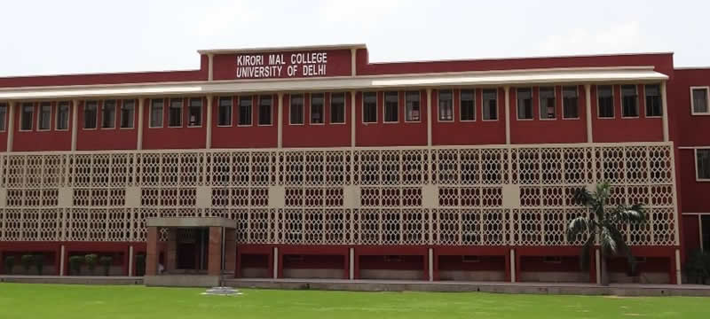
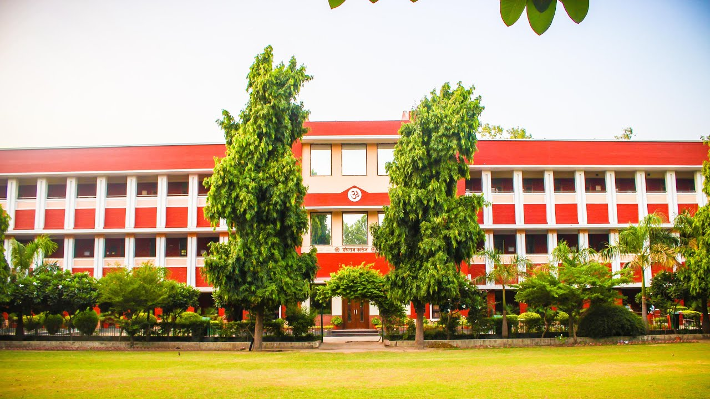
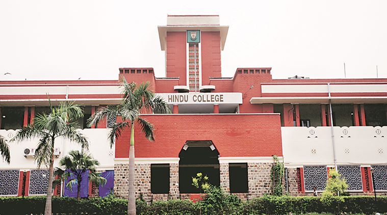
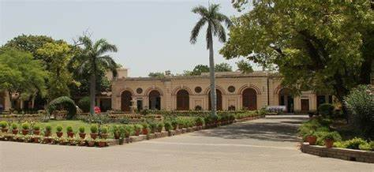
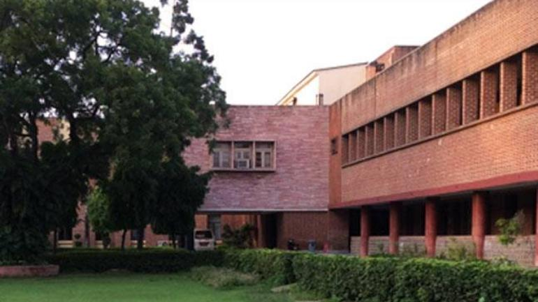
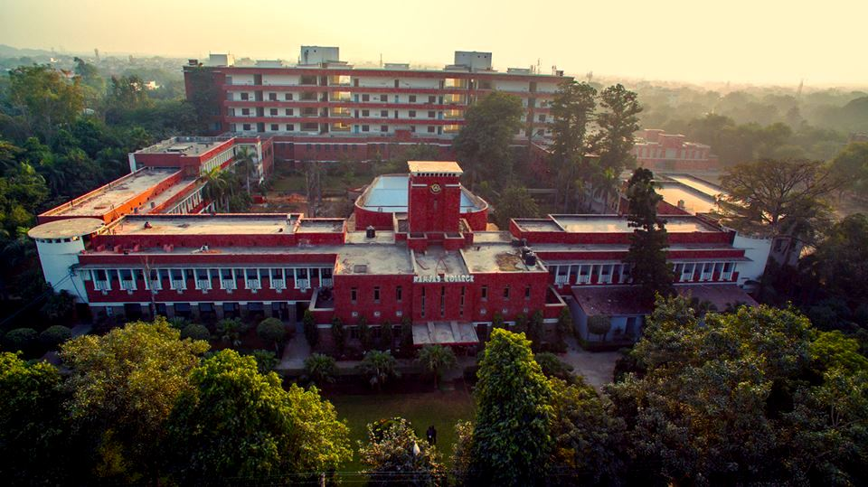
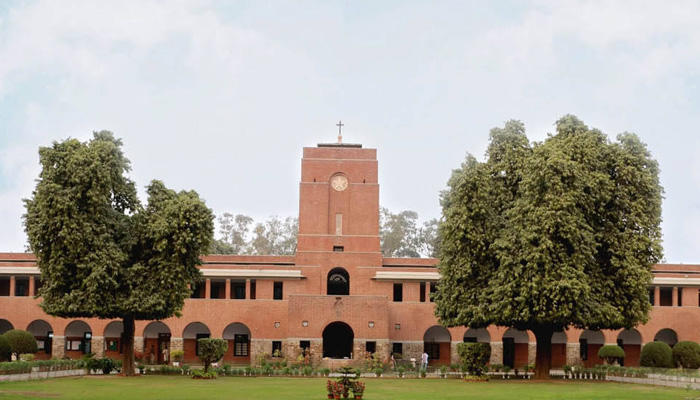
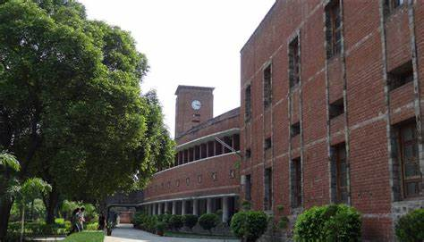
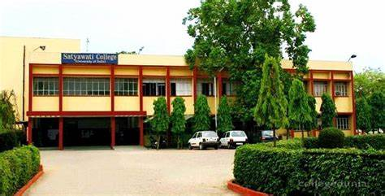
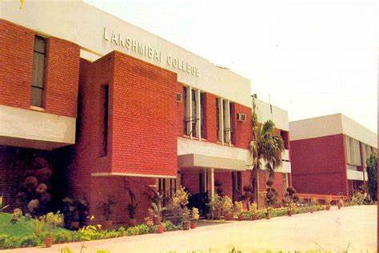

North Campus hosts the three founding colleges of the university which constituted the University of Delhi when it was founded. North campus proper now has 12 colleges geographically centred on the Faculty of Arts, Science , Law and Management.
The extended off campus also has colleges in the Ashok Vihar, Pitampura, Rajouri Garden and Netaji Subhash Place neighborhoods of Delhi. The campus also houses other centres and institutes of Delhi which include the Cluster Innovation Centre , Delhi School of Economics and Delhi School Of Journalism and also the Ambedkar Center for Biomedical Research (ACBR).
North Campus has the following colleges :-
Kirrori Mal College is one of the consitituent college of the University Of Delhi, located in the North Campusof DU, in New Delhi, India. Established in 1954. "National Assessment and Accreditation Council" accredited it with a CGPA of 3.54(A+) in 2016, which is third among all Delhi University colleges.
The College shifted to its present campus on 1 February 1954. The college celebrated its Golden Jubliee in February 2004. Kirroi Mal College has activities in drama, debate, music, fine arts, photography, dance and film. Notable among them is "Players" the college drama society. Its members receive training in theatre arts. It generally puts up four productions. The KMC Dramatics Society flourished under teacher Prof. Frank Thakurdas and was revived in 1981 by the present head Keval Arora who was also one of its past presidents. The last year cutt off of KMC is Read more -
Daulat Ram College, one of the leading colleges of University of Delhi, imparts education towards degree at the Bachelor's level in Arts, Science and Commerce. It has seven departments, which enroll students at the Masters level and hold M.A. tutorials that supplement the classes. The science departments are part of the Star Status awarded by the Department of Biotechnology, Ministry of Science and Technology, Government of India. At present the college has 18 departments and over 3546 students on rolls.
The college is well equipped with computer laboratories with internet facilities. The WiFi enabled laboratories and lecture theatres/class rooms with LCD projectors facilitate students in their academic pursuits. The college has fully air-conditioned library with over 1,15,000 titles and subscription to many journals with a computerized database and access.
Hansraj College is one of the consitituent college of the University Of Delhi, in New Delhi, India. "National Assessment and Accreditation Council" accredited it with a CGPA of 3.54(A+). The college offers studies in Science, Liberal Arts, and Commerce. Since its foundation in 1948, the college has produced notable alumni who are prominent leaders in their fields nationally and internationally. It is the first college of Delhi University and the first Central University college to hoist a Monumental National Flag in its premises, which was initiated by Flag Foundation Of India(NGO). The flag was hoisted on 25 January 2017, by Hansraj Alumnus and Founder of Flag Foundation Of India, Mr Naveen Jindal.
A premier and foremost institution within the country - Hansraj College is one of the largest constituent college of Delhi University with over 5000 students. Steeped in tradition, the college upholds the name as well as the ideals of the eminent educationalist Mahatma Hansraj. Constantly ranked amongst the top colleges in the three streams - Hansraj College holds the 3rd position Read more -
Hindu College is one of the consitituent college of the University Of Delhi, India. Established in 1899 [initially, at Kinari Bazar (Chandni Chowk, Delhi), later shifted to Kashmiri Gate (Delhi) and then to its present site in Delhi University (North Campus)], it is one of the oldest and most preferred colleges in Delhi. It offers undergraduate and postgraduate programmes in sciences, humanities, social sciences and commerce.
Nationally, it is ranked 2nd in 2019 by National Institute Ranking Framework (NIRF) under Ministry of Human Resource Development (Government of India). It is awarded 'Star College' status for its Department of Biotechnology by the Ministry of Science and Technology (Government of India). The College has produced many notable (infra) alumni in the fields of law, economics, science, psychology, business, literature, media, Read more -
The extended off campus also has colleges in the Ashok Vihar, Pitampura, Rajouri Garden and Netaji Subhash Place neighborhoods of Delhi. The campus also houses other centres and institutes of Delhi which include the Cluster Innovation Centre , Delhi School of Economics and Delhi School Of Journalism and also the Ambedkar Center for Biomedical Research (ACBR).
6. Indrapasth College Of Women
Indraprastha College for Women (estd. 1924) is a constituent college of the University of Delhi and its oldest women’s college. Founded as a part of a nation-wide campaign for women's education and empowerment, it is located on a beautiful campus which is a recognized heritage site and a landmark of Delhi. It has an enrolment of approximately 3500 students in its UG and PG programs. The College offers a wide range of courses, which promotes interdisciplinary studies in the 3 streams of Humanities, Mathematical Sciences and Commerce. Two new courses, B.A. (Hons.) Sociology and B.A. (Hons.) Geography, has commenced from the academic session July 2017. Uniquely, the College offers the Self-Financed BA (Hons) in Multimedia and Mass Communication (BMMMC).
The College Student Services include a vigorous Diversity Integration Program. The College has a Need Blind Admission Policy and offers need based financial assistance to new entrants at the time of admission itself. The College is 100% barrier free and has a “Under One Roof” Enabling Unit (EU) and Equal Opportunity Cell (EOC). Apart from a proactive financial aid policy, it organizes courses in English and ICT skills for the EWS and PwD-oriented skill training courses.
Miranda House pioneered science education for women at the University of Delhi when it started its B.Sc. Honours (Botany) course in 1948. Over a span of years, the department has produced a large number of eminent scientists, dedicated teachers and those who excelled in other areas. The department of Botany occupies the ground floor of the old Science Block. It has a spacious Lecture Theatre and two teaching laboratories equipped with instruments and computers. It also maintains a Museum, Herbarium, Departmental Library and a Botanical Garden.
The Department of Science and Technology, Government of India has funded a major research project entitled ‘Molecular basis of unique developmental biology of Podostemads’ at the Department of Botany in Miranda House.
8. Sri Guru Tegh Bahadur Khalsa College
Sri Guru Tegh Bahadur Khalsa College, a constituent college of University of Delhi, was established in 1951 and is maintained by Delhi Sikh Gurudwara Management Committee (DSGMC), a statutory body established under an act of the Parliament of India. The focus of the College at the time of inception was to ensure a comprehensive social transformation through access to quality education, in particular to young Punjabi Refugees of Partition in 1947, and to conserve and promote Punjabi language, culture, and heritage. The College is named after Ninth Guru - Sri Guru Tegh Bahadur, who sacrificed his life to uphold secular values, and is an institution with cosmopolitan environment and progressive outlook.
Over the years, the College has carved a niche for itself and is known to be one of the leading colleges of University. At present there are 18 undergraduate programmes, 2 B.Tech. programmes, 12 postgraduate programmes, one postgraduate diploma, 2 undergraduate diplomas, and 9 certificate courses, making a total of 44 programmes. During the current session 2015-16 there are 3,768 students in these programmes, and 140 full-time teachers, out of which 101 are permanent with 7 on leave/lien. During last four years, 57 teachers participated in various staff-development programmes.
Founded in 1917 by the great educationist and philanthropist, Rai Kedar Nath, Ramjas College is one of the oldest colleges of Delhi. Beginning from the humble precincts of Darya Ganj in Old Delhi, the College today boasts of a spacious campus, state-of-the-art infrastructure and an esteemed faculty of scholars trained at leading universities in India and abroad. At Ramjas, we believe in holistic education that goes beyond achieving academic excellence, and vocational training. Our philosophy is to realize the overall intellectual, creative, cultural and socio-political growth and development of both the students and the college community in its entirety.
The College invites all students irrespective of gender, caste, religion and physical challenges to make us a rich and varied community. The College offers a wide range of courses, extra-curricular activities and technologically advanced facilities accessible to the faculty, the students and the support staff. Here, each individual is encouraged to step beyond the confines of academic and administrative disciplines to explore and
St. Stephen's College is one of the consitituent college of the University Of Delhi. Widely regarded as one of the oldest and most prestigious colleges for arts and sciences in India, the institution has produced a line of distinguished alumni. It was established by the Cambridge Mission to Delhi. The college admits both undergraduates and post-graduates, and awards degrees in liberal arts and sciences under the purview of the University of Delhi. As of 2017, the Governing Body of the College has unilaterally initiated a move towards making it an autonomous institution.
St. Stephen's College is a co-educational institution of higher learning. It is regarded as one of the best colleges in the country. Nationwide surveys such as those by India Today and The Week have consistently described the college as amongst the best colleges in India for both arts and sciences. It is one of the three founding colleges of University of Delhi, along with Hindu College and Ramjas College. In spite of its location in North India, the college has always striven to admit students and select teachers from all communities and from all parts of India. It also admits a small number of students from overseas. The college offers a number of scholarships and awards to meritorious students. These are endowed over a period of time. As of February 2017, the Governing Body (GB) of St. Stephen’s College has decided to go ahead with Read more -
11. Shri Ram College Of Commerce
Commerce education in India began in 1886 with the establishment of a commercial school in Chennai (erstwhile Madras). Shri Ram College of Commerce embarked on its voyage early in the year 1920 when on the day of Basant Panchmi, seven leading businessmen in Delhi established the Commercial Education Trust. The Trust set up its first school in the same year under the name 'The Commercial School' at Charkhewalan in the walled city of pre-independence Delhi. The school introduced a Post-Matriculation Diploma Programme in Commerce under the supervision of Mr. R.K. Kumar, who later became the first Principal of the Commercial College. The inauguration of the Commercial College paved the entry of commerce education in the University system of Delhi.
The first batch of students was enrolled on the first floor of a 'Hall' opposite the St. James' Church at Kashmere Gate. The classes began with twelve students and four faculty members from a hired bungalow at 8, Darya Ganj, New Delhi. In 1926, the Commercial College got affiliated to the University of Delhi. Six years later, it was upgraded to the status of a Degree College and started awarding its graduates the B.A. (Pass) (Commerce Group) Degree of the University. The B.A. (Honours) (Commerce Group) Degree was introduced in 1943.
Satyawati College, a constituent College of the University of Delhi, was established in the year 1972 by the Government of Delhi. The College is named after a great freedom fighter, Behen (Sister) Satyawati, grand-daughter of Swami Shradhanand, who worked in close association with leaders like Mahatma Gandhi, Jawahar Lal Nehru, Jai Prakash Narain and Sarojini Naidu. She worked tirelessly till her death for uprooting poverty, ignorance and communalism. She was named Toofani Behen (Stormy Sister) by Mahatma Gandhi for her zeal and commitment The College is centrally located in Ashok Vihar, North Delhi and has a sprawling campus spread over an area of 10 acres. It is a co-educational institution and attracts students from all strata of the society.
Lakshmibai College is a constituent college of the University of Delhi and is well-connected through several metro stations and bus-routes. The college is proud of its red-brick buildings, lawns adorned with trees and flowers, well-maintained sports grounds, staff-quarters, wireless Internet access under the University Wide Networking Programme, separate Internet connectivity, supplementary audio-video gadgets, two air conditioned lecture theatres, a furnished seminar room, a modern fully automated library using Libsys software, two well-equipped computer labs and an active placement cell. The library has undergone renovation and now has its own computer unit catering to the students and teaching faculty. The library is fully automated and is endowed with OPAC and scanner-guns for greater efficiency. The college is inclusive in its intent and actions , therefore SAFA is loaded on the systems of the computer lab for differently-abled students to help them learn typing skills. Wi-Fi connectivity has also been provided to the lab.
Lakshmibai College is proud of its extremely committed faculty. Our teachers spend considerable time with their students, catering to their academic needs and honing their skills. The educators of this college believe that their job does not end at merely bookish concerns. They constantly endeavour to bring out the best in their students.Lakshmibai College is a constituent college of the University of Delhi that provides higher education to women only.